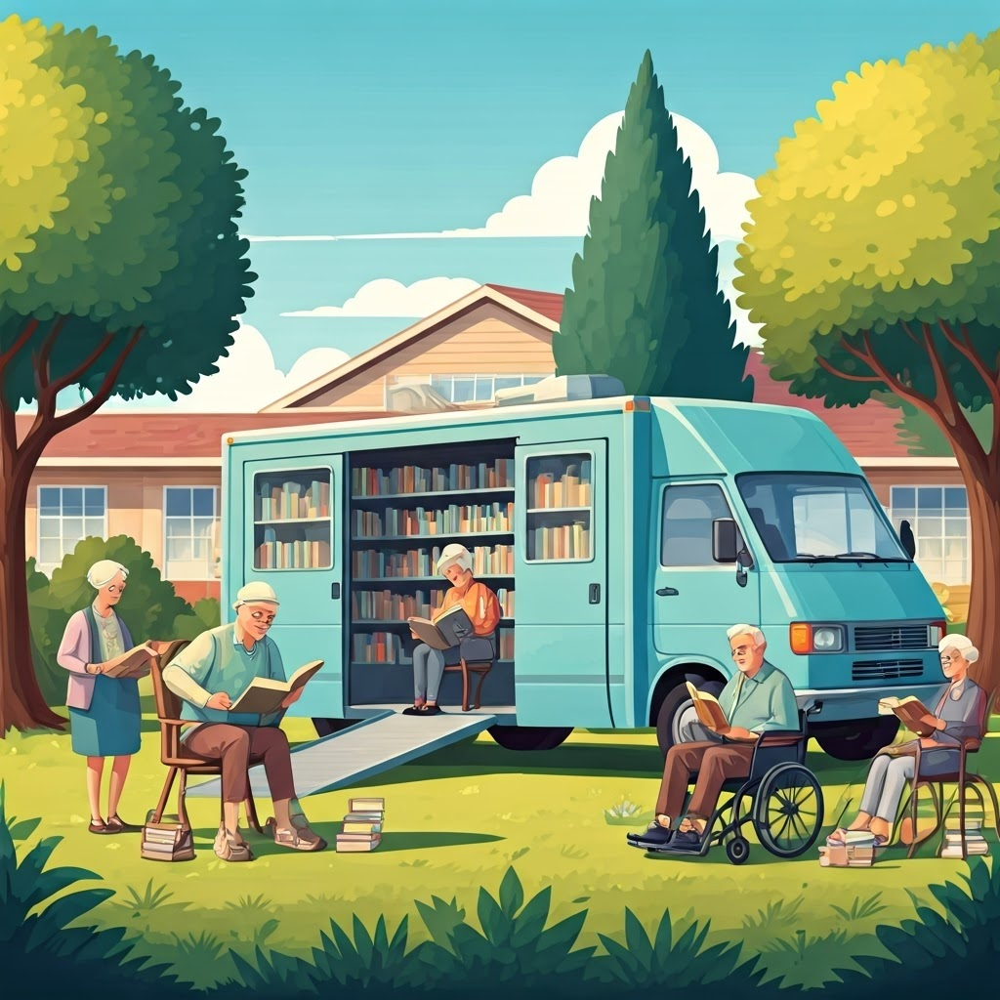

哈囉😊這是高雄市村里級熱圖，你可以點擊縣市中的各區域看到各區人口數。
此為65-79歲的年齡熱力圖，人口多集中在南高雄，當我們點進人口數較多的行政區時，可發現同區不同里的人口數差異極大，以三民區為例，三民區是高雄繁華熱鬧的區域之一，但其中的川東里人口數為237，連Q1都不到。另外像65-79歲人數最多的鳥松區也有同樣情況，雖然整體人口偏高，但內部的差異顯著，此圖顯示即便在相對高齡集中的行政區內，人口分布仍呈現高度不均，這對高齡政策的規劃與資源投放提出挑戰，必須進一步考量到里層級的精準需求。
此為80歲以上的年齡熱力圖，除了南高雄外，美濃區的人口數明顯較多，美濃區人口最少的吉和里人口數為100，大於Q2，可見美濃的80歲以上人口與南高雄繁華區域是差不多的。而鳥松區依然是人口數最多，可見鳥松區是最需要長者資源與照護的地方，尤其在高齡人口集中里別，如大華里與鳥松里，更應加強設置社區關懷據點與醫療資源。同時，像美濃這樣的非都會型地區卻有高齡人口集中的現象，也提醒我們在資源規劃時不能僅依照都市熱區分布來配置，而應深入考察各區的實際高齡結構，特別是交通、就醫可及性與在地照顧系統是否完善，以利發展出更均衡且符合在地需求的高齡友善環境。
集點子：行動書車與讀書會 - 打造高齡友善閱讀空間

設立社區行動書車與讀書會，讓長者方便接觸閱讀資源，也可讓長者成為社區講師實現自我價值，透過分享與交流增強社交情感。
書籍類型可涵蓋安全與健康等主題，提升長者日常能力；同時也能提供幼童繪本，由長者帶領孩童閱讀，增進祖孫情感。
藉由讀書會讓書車志工與長者作伴，達到心靈層面的交流。偶爾邀請消防員進行安全宣導，也能確保長者居家安全。
此外可鼓勵長者寫作，將閱讀心得或對人生的感悟發表於網路，讓長者成為「不老作家」。書車志工也可協助拍攝長者在讀書會時的點點滴滴，留給長者特別的回憶，更可上傳到網上帶動更多長者共讀。
希望結合長照服務，提供無障礙空間，讓身心障礙者也能就近參與。透過完善規劃打造高齡友善、連通互助的社區閱讀環境。